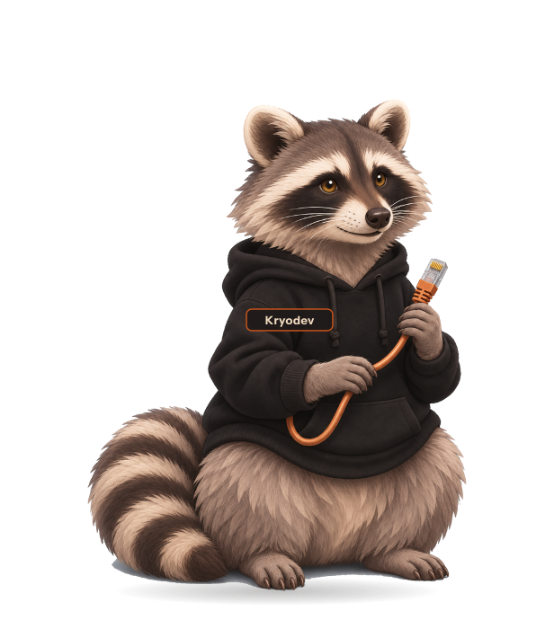

Tarjeta de presentación
Imprímela, muéstrala desde el celular o guarda el contacto directo en tu teléfono.

Kryo
Nicolás Díaz Carrillo
Apps web · Redes · Soporte técnico
Valdivia, Chile
nicolasd.carrillo@gmail.com
github.com/KryoDevs